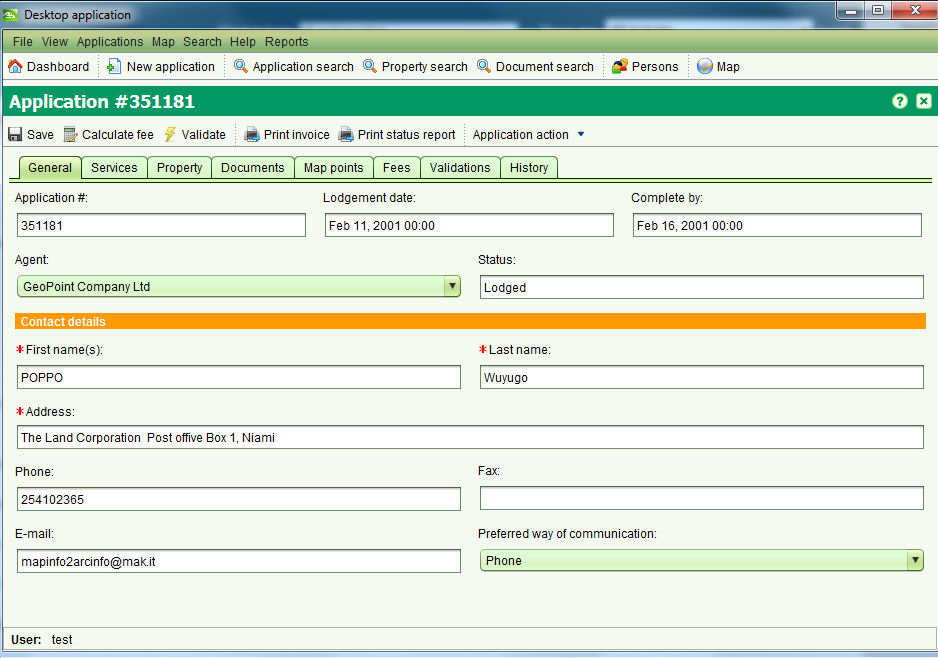

Détails d'une Demande
L'écran de Détails d'une Demande permet d'entrer les détails d'une nouvelle demande et/ou
d'éditer les détails d'une demande existante. Pour créer une nouvelle demande, l'écran de détails
de la demande peut être accèder depuis le menu Demande > Nouvelle Demande ou en sélectionnant
 .
.
Pour éditer une demande, sélectionner la demande dans les listes de demandes assignées ou non-assignées
de l'accueil et choisir Editer. Si la demande n'est pas affichée dans les listes de demande,
utiliser l'écran Recherche Demande pour la localiser et cliquer le bouton Editer.
L'écran de détails de la demande s'affiche, permettant l'édition et la sauvegarde des détails
de la demande.

Une demande représente un paquet de services qui doivent être traités par l'agence d'administration
des terres, typiquement en réponse à une requête client. Chaque service conduit à des changements
des informations des propriéétés et/ou des droits associés. Les détails pouvant être entrés
à une demande sont:
- Intermédiaire – Un individu ou organisation requièrant des informations ou des changements au
registre foncier et/ou des informations de cadastre enregistrées dans SOLA. L'intermédiaire peut être un juriste
ou un géomètre sous instruction du propriétaire, le(s) propriétaire(s) lui(eux)-même(s) ou une tièrce partie ayant
un intérêt particulier envers une propriété. Les détails de l'intermédiaire sont optionnels.
- Personne à contacter – L'individu qui peut être contacté en cas de clarification ou modification
nécessaire pour les détails de la demande.
Une personne à contacter doit être identifiée à chaque demande et est normalement de demandeur.
- Services – Utilisé pour contrôler le type de changement qu'une demande peut faire au registre foncier et/ou
aux informations cadastre enregistrées dans SOLA. D'une façon générale, ceci identifie les actions que l'agence d'administration
des terres doit traiter pour une demande. Référer à la section Services pour connaître les services disponibles
dans SOLA. Au moins un service doit être ajouté à chaque demande.
- Propriété – La ou les propriétés affectées par une demande. Les détails de propriété sont optionnel pour
les nouvelles demandes, mais peuvent être demandés avant de commencer des services dépendant des services sélectionnés pour
la demande.
- Documents – Les documents légaux ou autres expliquant et/ou justifiant les raisons de modifier le registre foncier
et/ou les informations de cadastre. Les images scannées des documents doivent être attachées à la demande pour faciliter la référence.
Les détails du document sont optionnels; cependant certains types de document sont sencés accompagnés divers services.
La liste du type de document requis de l'onglet Documents identifie les types de document qui doivent être inclus avec
la demande suivant les services qui ont été sélectionnés.
- Frais – Identifie les frais payables à l'agence d'administration des terres avant que la demande soit
traitée. Pour l'instant, ces frais sont basés sur le service et les informations de propriété enregistrées
pour la demande. Ils peuvent être personnalisés pour satisfaire les besoins spécifiques à l'agence d'administration
des terres. Les frais sont calculés automatiquement quand une nouvelle demande est déposée. Pour procéder au calcul
des frais avant le dépôt, utiliser l'outil de calcul dans la bar de menu de l'écran de détails de la demande.
Il est également possible d'imprimer un reçu pour la demande en utilisant l'outil d'impression de reçu.
SOLA empêche l'assignation de demandes dont les frais n'ont pas été payés. Une fois que le cleint ou l'intermédiaire
a payé les frais de demande, il est possible de marquer la demande comme "payée" en utilisant la case à cocher afin
de procéder au traitement de la demande. Il est également possible d'enregistrer le montant payé ainsi que le
numéro de reçu. Noter que la case à cocher "Payé" n'est éditable que si l'utilisateur à le rôle approprié.
- Points cartographiques – fournis dans le plan cadastral et l'outil de repèrage d'une demande et permettent
d'identifier la localisation approximative d'une demande. Enregistrer cette information peut aider à identifier
d'autres demandes à proximité de la nouvelle demande et ayant une impacte sur la nouvelle demande ou
vice versa. Ceci est optionnel.
- Validations – Affichent les résultats de règles métier automatisées exécutées quand une demande est validée
manuellement utilisant l'action Valider.
La validation n'est disponible qu'après le dépôt de la demande.
- Historique – Affichent l'historique des actions appliquées à une demande et ses
services. Les actions pouvant être appliquées sont illustrées dans les sections Cycle de Vie d'une Demande et
Cycle de Vie d'un Service. Les détails de l'historique n'est disponible qu'après le dépôt de la demande.
Voir aussi